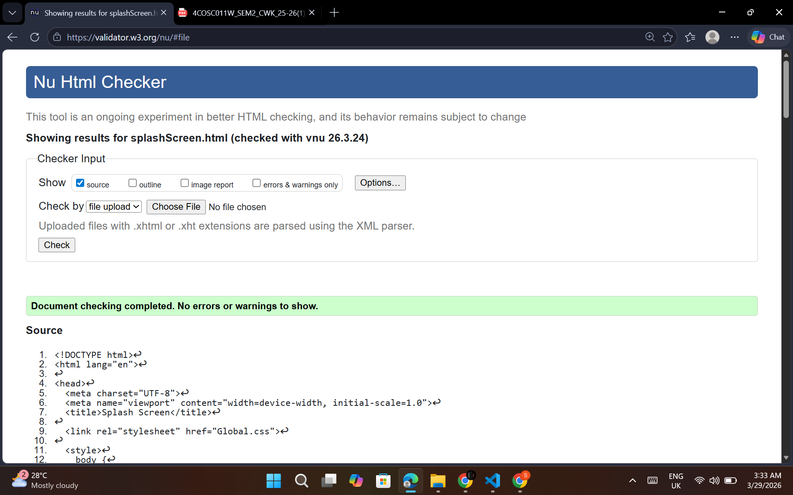
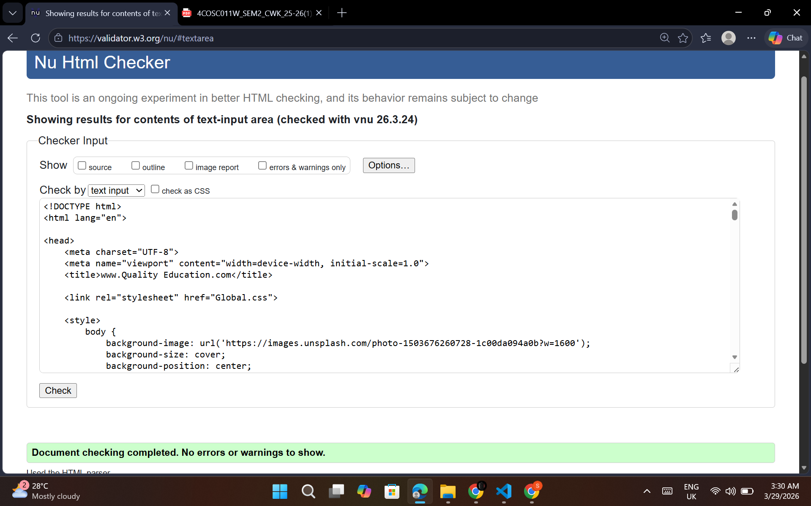
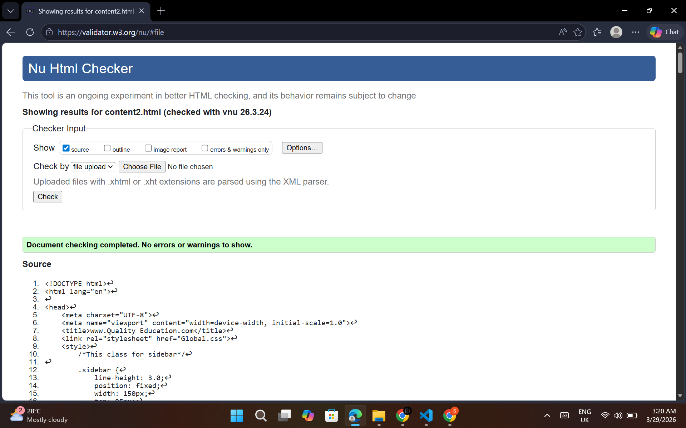

Splash Screen validation report
The validation report for my Splash Screen confirmed that the page passed with no errors or warnings. I used the W3C Nu Html Checker to validate the file. The page uses correct HTML structure including the meta refresh tag for the automatic redirect, the CSS loader animation, and the JavaScript countdown timer. All elements are properly closed and nested correctly.

Back to Page Editor page
Action Impact Simulator validation report
The validation report for my Action Impact Simulator page also passed with no errors or warnings. The page includes embedded CSS with more than five rules, JavaScript card selection and score tracking, and a background image that changes based on the impact level. All HTML tags are correctly opened and closed, and all images include alt text.

Back to Page Editor page
Action Impact Simulator Section
Content Page validation report
The validation report for my Content Page passed with no errors or warnings. The page uses a fixed sidebar with internal anchor links, five content sections each with an image and paragraph side by side, key fact boxes, a Go To Top button using CSS only, and links to the other student content pages. All HTML is correctly structured and all images include alt text.
